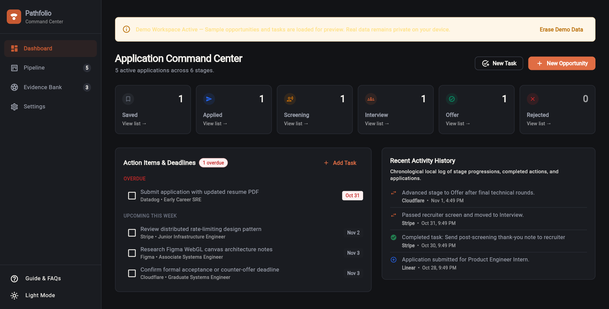
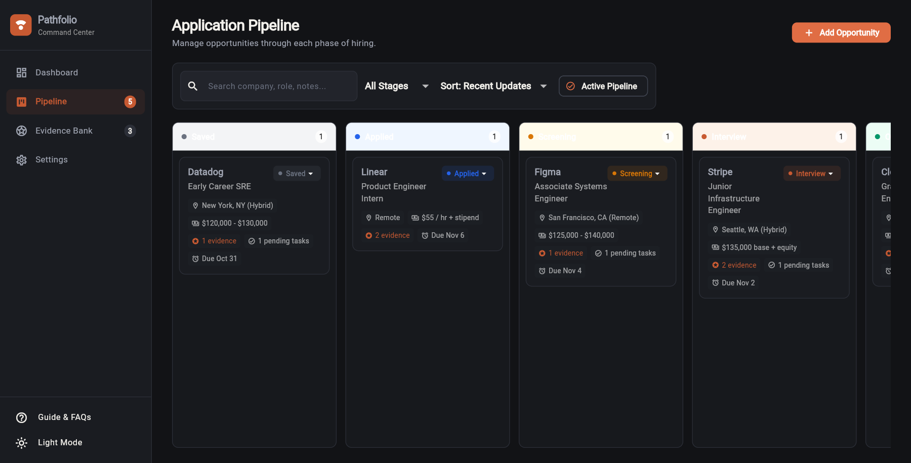
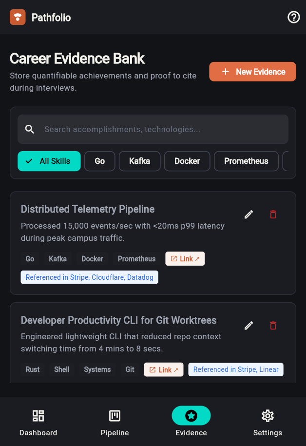

The Considered Command Center for Your Career Trajectory.
Navigate multi-stage technical recruiting, cite quantifiable engineering achievements during interviews, and preserve follow-up momentum. All stored securely on your own device.
Founding Systems Engineer
The Six-Stage Application Flight Path
Job hunting fails when applications get lost in scattered bookmarks. Pathfolio gives every opportunity an explicit trajectory with chronological timestamped milestones and velocity tracking.
Figma — Associate Systems Engineer
Opportunity identified and bookmarked. Analyze job requirements, verify alignment with your STAR evidence bank, and tailor your portfolio focus before applying.
Review engineering blog posts on Figma's WebAssembly canvas rendering; map 2 STAR evidence stories to distributed caching.
- Salary range validated against local benchmarks
- 3 Evidence Bank items linked to role requirements
- Follow-up reminder set for application deadline
The STAR Evidence Matrix
Technical interviewers evaluate engineering competence through concrete past impact, not vague claims. Pathfolio organizes your career accomplishments into instant, reusable interview talking points.
Reduced p99 Webhook Ingestion Latency by 42%
Situation
Third-party payment webhooks experienced severe processing bottlenecks during high-volume flash sales, creating queue backpressure.
Task
Architect an asynchronous, non-blocking ingestion buffer capable of absorbing 15,000 requests/sec with zero payload drops.
Action
Replaced synchronous database writes with Redis streams, implemented exponential backoff retries, and partitioned worker workers by consumer groups.
Result
Processed 4.2M events with 0 lost packets. Slashed p99 response time from 840ms to 48ms, unblocking multi-region checkout scalability.
Client-Side Sandboxing vs. Centralized Cloud Architecture
Most career tools store your private compensation notes, interview history, and search records on centralized corporate servers. Pathfolio takes an offline-first architectural approach: every opportunity record, deadline, and career evidence note stays in your own device's sandboxed storage.
Test Pathfolio's Real Engine Right Now
Move applications across stages, attach verifiable STAR proof tags, toggle deadlines, and export an actual, valid schema v1 JSON backup you can immediately import into the real app.
1. ACTIVE OPPORTUNITY
Linear
Founding Systems Engineer
- 2026-11-02 18:30 Stage updated to Screening
- 2026-11-01 10:15 Application submitted via direct referral
2. FOLLOW-UP TASKS
- Completed
- Due Tomorrow
- Overdue
3. EVIDENCE ATTACHMENTS
Real Screens from the Production Build
Every view below is captured directly from the live Flutter engine running the optional, clearly marked demo workspace. Your production workspace initializes clean and empty.



Engineered for Technical Focus & Absolute Privacy
Built from scratch to eliminate the bloat, ads, and privacy violations of contemporary career platforms.
Structured 6-Stage Pipeline
Move opportunities cleanly between Saved, Applied, Screening, Technical, Final, and Offer. Every transition logs a dated audit trail in local history.
Follow-ups & Overdue Alerts
Never drop recruiter communications or miss take-home deadlines. The dashboard dynamically flags overdue and upcoming tasks calculated strictly against local system time.
STAR Career Evidence Bank
Structure your career accomplishments into Situation, Task, Action, and Result. Search by technical skill tags and cite directly during interviews.
100% Local-First Storage
Zero cloud servers, zero tracking cookies, zero analytics beacons. All application records remain sandboxed within your browser or Android device.
Atomic Schema v1 JSON Backups
Export a structured, schema-validated JSON snapshot anytime. Restore seamlessly across browsers and devices with count previews and atomic commits designed to reject malformed files.
Tactile Editorial Craft
Warm porcelain surfaces, deep ink typography, high-contrast text, visible focus rings, keyboard navigation (Tab, Enter, Esc), and strict respect for system reduced-motion preferences.